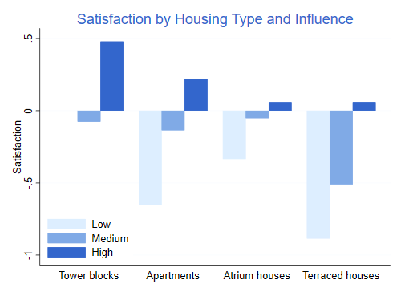
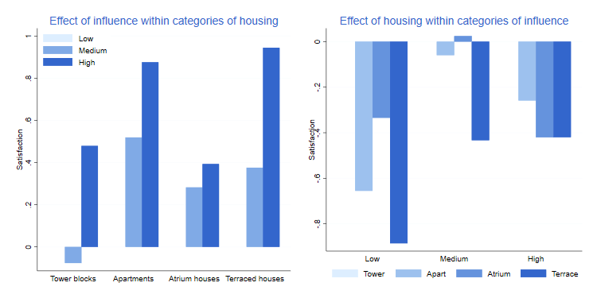

We now turn our attention to models for ordered categorical outcomes. Obviously the multinomial and sequential logit models can be applied as well, but they make no explicit use of the fact that the categories are ordered. The models considered here are specifically designed for ordered data.
We will use data from 1681 residents of twelve areas in Copenhagen, classified in terms of the type of housing that they have (tower blocks, apartments, atrium houses and terraced houses), their feeling of influence on apartment management (low, medium, high), their degree of contact with the neighbors (low, high), and their satisfaction with housing conditions (low, medium, high).
The data are available in the datasets section and can be read directly from there.
. use https://grodri.github.io/datasets/copen, clear
(Housing Conditions in Copenhagen)
. list in 1/6
┌────────────────────────────────────────────────────────┐
│ id housing influe~e contact satisf~n n │
├────────────────────────────────────────────────────────┤
1. │ 1 Tower blocks Low low Low 21 │
2. │ 2 Tower blocks Low low Medium 21 │
3. │ 3 Tower blocks Low low High 28 │
4. │ 4 Tower blocks Low high Low 14 │
5. │ 5 Tower blocks Low high Medium 19 │
├────────────────────────────────────────────────────────┤
6. │ 6 Tower blocks Low high High 37 │
└────────────────────────────────────────────────────────┘
We will treat satisfaction as the outcome and type of housing, feeling of influence and contact with the neighbors as categorical predictors.
It will be useful for comparison purposes to fit the saturated multinomial logit model, where each of the 24 combinations of housing type, influence and contact, has its own multinomial distribution. The group code can easily be generated from the observation number, and the easiest way to fit the model is to treat the code as a factor.
. gen group = int((_n-1)/3)+1 . quietly mlogit satisfaction i.group [fw=n] . estimates store sat . di e(ll) -1715.7108
The log likelihood is -1715.7. You can verify that this is sum(n*log(p)), where n are the counts and p the proportions for the categories of satisfaction within each of the 24 groups.
The next task is to fit the additive ordered logit model from Table 6.5 in the notes.
. ologit satis i.housing i.influence i.contact [fw=n]
Iteration 0: log likelihood = -1824.4388
Iteration 1: log likelihood = -1739.8163
Iteration 2: log likelihood = -1739.5747
Iteration 3: log likelihood = -1739.5746
Ordered logistic regression Number of obs = 1,681
LR chi2(6) = 169.73
Prob > chi2 = 0.0000
Log likelihood = -1739.5746 Pseudo R2 = 0.0465
──────────────┬────────────────────────────────────────────────────────────────
satisfaction │ Coefficient Std. err. z P>|z| [95% conf. interval]
──────────────┼────────────────────────────────────────────────────────────────
housing │
Apartments │ -.5723499 .119238 -4.80 0.000 -.8060521 -.3386477
Atrium hou.. │ -.3661863 .1551733 -2.36 0.018 -.6703205 -.0620522
Terraced h.. │ -1.091015 .151486 -7.20 0.000 -1.387922 -.7941074
│
influence │
Medium │ .5663937 .1046528 5.41 0.000 .361278 .7715093
High │ 1.288819 .1271561 10.14 0.000 1.039597 1.53804
│
contact │
high │ .360284 .0955358 3.77 0.000 .1730372 .5475307
──────────────┼────────────────────────────────────────────────────────────────
/cut1 │ -.496135 .1248472 -.7408311 -.2514389
/cut2 │ .6907081 .1254719 .4447876 .9366286
──────────────┴────────────────────────────────────────────────────────────────
. estimates store additive
. lrtest . sat, force
Likelihood-ratio test
Assumption: additive nested within sat
LR chi2(40) = 47.73
Prob > chi2 = 0.1874
The log-likelihood is -1739.6, so the deviance for this model
compared to the saturated multinomial model is 47.7 on 40 d.f. This is a
perfectly valid test because the models are nested, but Stata is
cautious; if you type lrtest . sat it will complain that
the test involves different estimators: mlogit
vs. ologit. Fortunately we can insist with the force
option, which is what I have done. Use cautiously!
The bottom line is that the deviance is not much more than one would expect when saving 40 parameters, so we have no evidence against the additive model. To be thorough, however, we will explore individual interactions just in case the deviance is concentrated on a few d.f.
The next step is to explore two-factor interactions.
. quietly ologit satis i.housing#i.influence i.contact [fw=n] . lrtest . sat, force Likelihood-ratio test Assumption: . nested within sat LR chi2(34) = 25.22 Prob > chi2 = 0.8623 . quietly ologit satis i.housing#i.contact i.influence [fw=n] . lrtest . sat, force Likelihood-ratio test Assumption: . nested within sat LR chi2(37) = 39.06 Prob > chi2 = 0.3773 . quietly ologit satis i.housing i.influence#i.contact [fw=n] . lrtest . sat, force Likelihood-ratio test Assumption: . nested within sat LR chi2(38) = 47.52 Prob > chi2 = 0.1385
The interaction between housing and influence reduces the deviance by about half, at the expense of only six d.f., so it is worth a second look. The interaction between housing and contact makes a much smaller dent, and the interaction between influence and contact adds practically nothing.
We could also compare each of these models to the additive model, thus testing the interaction directly. We would get chisquareds of 22.51 on 6 d.f., 8.67 on 3 d.f. and 0.21 on 2 d.f.
Clearly the interaction to add is the first one, allowing the association between satisfaction with housing and a feeling of influence on management, net of contact with neighbors, to depend on the type of housing. To examine parameter estimates we refit the model:
. ologit satis i.housing##i.influence i.contact [fw=n]
Iteration 0: log likelihood = -1824.4388
Iteration 1: log likelihood = -1728.6182
Iteration 2: log likelihood = -1728.3201
Iteration 3: log likelihood = -1728.32
Ordered logistic regression Number of obs = 1,681
LR chi2(12) = 192.24
Prob > chi2 = 0.0000
Log likelihood = -1728.32 Pseudo R2 = 0.0527
──────────────┬────────────────────────────────────────────────────────────────
satisfaction │ Coefficient Std. err. z P>|z| [95% conf. interval]
──────────────┼────────────────────────────────────────────────────────────────
housing │
Apartments │ -1.188494 .1972418 -6.03 0.000 -1.575081 -.8019072
Atrium hou.. │ -.6067061 .2445664 -2.48 0.013 -1.086047 -.1273647
Terraced h.. │ -1.606231 .2409971 -6.66 0.000 -2.078576 -1.133885
│
influence │
Medium │ -.1390175 .2125483 -0.65 0.513 -.5556044 .2775694
High │ .8688638 .2743369 3.17 0.002 .3311733 1.406554
│
housing#│
influence │
Apartments #│
Medium │ 1.080868 .2658489 4.07 0.000 .5598135 1.601922
Apartments #│
High │ .7197816 .3287309 2.19 0.029 .0754809 1.364082
Atrium hou.. #│
Medium │ .65111 .3450048 1.89 0.059 -.0250869 1.327307
Atrium hou.. #│
High │ -.1555515 .4104826 -0.38 0.705 -.9600826 .6489795
Terraced h.. #│
Medium │ .8210056 .3306666 2.48 0.013 .172911 1.4691
Terraced h.. #│
High │ .8446195 .4302698 1.96 0.050 .0013062 1.687933
│
contact │
high │ .372082 .0959868 3.88 0.000 .1839514 .5602126
──────────────┼────────────────────────────────────────────────────────────────
/cut1 │ -.8881686 .1671554 -1.215787 -.56055
/cut2 │ .3126319 .1656627 -.012061 .6373249
──────────────┴────────────────────────────────────────────────────────────────
. lrtest . sat, force
Likelihood-ratio test
Assumption: . nested within sat
LR chi2(34) = 25.22
Prob > chi2 = 0.8623
. lrtest additive .
Likelihood-ratio test
Assumption: additive nested within .
LR chi2(6) = 22.51
Prob > chi2 = 0.0010
The model deviance of 25.2 on 34 d.f. is not significant. To test for the interaction effect we compare this model with the additive model, obtaining a chi-squared statistic of 22.5 on six d.f., which is significant at the 0.001 level.
At this point one might consider adding a second interaction. The obvious choice is to allow the association between satisfaction and contact with neighbors to depend on the type of housing. This would reduce the deviance by 7.95 at the expense of three d.f., a gain that just makes the conventional 5% cutoff with a p-value of 0.047. In the interest of simplicity, however, we will not pursue this addition.
The estimates indicate that respondents who have high contact with their neighbors are more satisfied than respondents with low contact who live in the same type of housing and have the same feeling of influence on management. The difference is estimated as 0.372 units in the underlying logistic scale. Dividing by the standard deviation of the (standard) logistic distribution we obtain
. display _b[2.contact]/(_pi/sqrt(3)) .20513955
So the difference in satisfaction between high and low contact with neighbors, among respondents with the same housing and influence, is 0.205 standard deviations.
Alternatively, we can exponentiate the coefficient:
. di exp(_b[2.contact]) 1.4507519
The odds of reporting high satisfaction (relative to medium or low), are 45% higher among tenants who have high contact with the neighbors than among tenants with low contact and have the same type of housing and influence. The odds of reporting medium or high satisfaction (as opposed to low) are also 45% higher in this comparison.
Interpretation of the effects of housing type and influence requires taking into account the interaction effect. In the notes we describe differences by housing type among those who feel they have little influence in management, and the effects of influence in each type of housing.
Let us do something a bit different here, and focus on the joint effects of housing and influence, combining the main effects and interactions. The easiest way to do this is to refit the model omitting the main effects, which causes them to be folded into the interaction. I also divide the estimates by π/√3 to express them in standard deviation units in a latent satisfaction scale.
. ologit satis i.housing#i.influence i.contact [fw=n]
Iteration 0: log likelihood = -1824.4388
Iteration 1: log likelihood = -1728.6182
Iteration 2: log likelihood = -1728.3201
Iteration 3: log likelihood = -1728.32
Ordered logistic regression Number of obs = 1,681
LR chi2(12) = 192.24
Prob > chi2 = 0.0000
Log likelihood = -1728.32 Pseudo R2 = 0.0527
──────────────┬────────────────────────────────────────────────────────────────
satisfaction │ Coefficient Std. err. z P>|z| [95% conf. interval]
──────────────┼────────────────────────────────────────────────────────────────
housing#│
influence │
Tower blocks #│
Medium │ -.1390175 .2125483 -0.65 0.513 -.5556044 .2775694
Tower blocks #│
High │ .8688638 .2743369 3.17 0.002 .3311733 1.406554
Apartments #│
Low │ -1.188494 .1972418 -6.03 0.000 -1.575081 -.8019072
Apartments #│
Medium │ -.2466437 .1913323 -1.29 0.197 -.621648 .1283607
Apartments #│
High │ .4001515 .2104573 1.90 0.057 -.0123373 .8126403
Atrium hou.. #│
Low │ -.6067061 .2445664 -2.48 0.013 -1.086047 -.1273647
Atrium hou.. #│
Medium │ -.0946136 .2536286 -0.37 0.709 -.5917165 .4024894
Atrium hou.. #│
High │ .1066063 .2896558 0.37 0.713 -.4611086 .6743212
Terraced h.. #│
Low │ -1.606231 .2409971 -6.66 0.000 -2.078576 -1.133885
Terraced h.. #│
Medium │ -.9242424 .2391896 -3.86 0.000 -1.393045 -.4554395
Terraced h.. #│
High │ .1072528 .320668 0.33 0.738 -.5212449 .7357505
│
contact │
high │ .372082 .0959868 3.88 0.000 .1839514 .5602126
──────────────┼────────────────────────────────────────────────────────────────
/cut1 │ -.8881686 .1671554 -1.215787 -.56055
/cut2 │ .3126319 .1656627 -.012061 .6373249
──────────────┴────────────────────────────────────────────────────────────────
. capture drop coef hc ic
. gen z = .
(72 missing values generated)
. gen hc = .
(72 missing values generated)
. gen ic = .
(72 missing values generated)
. mata b = st_matrix("e(b)")
. mata st_store(1::12, "z", b[1::12]':/(pi()/sqrt(3)))
. mata st_store(1::12, "hc", (1::4) # (1\1\1))
. mata st_store(1::12, "ic", (1\1\1\1) # (1::3))
. label values hc housing
. label values ic lowmedhi
. set scheme grlog
. graph bar z, over(ic, gap(0)) over(hc) asyvar ///
> bar(1, color("221 238 255")) bar(2, color("128 170 230")) ///
> bar(3, color("51 102 204")) ytitle(Satisfaction) ///
> legend(ring(0) pos(7) cols(1) region(lwidth(none))) ///
> title(Satisfaction by Housing Type and Influence)
. graph export fig63.png, replace width(500)
file fig63.png saved as PNG format

Satisfaction with housing conditions is highest for residents of tower blocks who feel they have high influence, and lowest for residents of terraced houses with low influence. Satisfaction increases with influence in each type of housing, but the difference is largest for terraced houses and apartments than fower blocks and atrium houses.
Another way to present the results is by focusing on the effects of influence within each type of housing or, alternatively, on the effects of housing type within each category of influence. All we need to do is substract the values for the reference cell of the control variable.
. // I
. capture drop zi zh
. gen zi = z - z[3*hc - 2]
(60 missing values generated)
. graph bar zi, over(ic, gap(0)) over(hc) asyvar ///
> bar(1, color("221 238 255")) bar(2, color("128 170 230")) ///
> bar(3, color("51 102 204")) ytitle(Satisfaction) ///
> legend(ring(0) pos(11) cols(1) region(lwidth(none))) name(i, replace) ///
> title(Effect of influence within categories of housing)
. // H
. gen zh = z - z[ic]
(60 missing values generated)
. graph bar zh, over(hc, gap(0) ///
> relabel(1 "Tower" 2 "Apart" 3 "Atrium" 4 "Terrace")) over(ic) asyvar ///
> bar(1, color("221 238 255")) bar(2, color("157 193 238")) ///
> bar(3, color("101 147 221")) bar(4, color("51 102 204")) ///
> legend(rows(1) region(lwidth(none))) ytitle(Satisfaction) name(h, replace) /
> //
> title(Effect of housing within categories of influence)
. // both
. graph combine i h, xsize(6) ysize(3)
. graph export fig64.png, replace width(750)
file fig64.png saved as PNG format

On the left panel we see more clearly the differences by influence in each type of housing. As noted above, having influence is good, particularly of you live in a terraced house or apartment. The right panel shows differences by type of housing within categories of influence. Tower residents are, generally speaking, more satisfied than residents of other types of housing, and the differences tend to be larger when influence is low.
Let us consider predicted probabilities. Just as in multinomial logit
models, the predict command computes predicted
probabilities (the default) or logits. With probabilities you need to
specify an output variable for each response category. With logits you
specify just one variable which stores the linear predictor x’β, without
the cutpoints. Let us predict the probabilities for everyone.
. predict pSatLow pSatMed pSatHigh (option pr assumed; predicted probabilities)
We’ll look at these results for tower block dwellers with little
influence and with high and low contact with neighbors. The first of
these groups is, of course, the reference cell. I add the condition
sat==1 to list the probabilities just once for each
group:
. list contact pSatLow pSatMed pSatHigh ///
> if housing==1 & influence==1 & sat==1, clean
contact pSatLow pSatMed pSatHigh
1. low .2914879 .2860397 .4224724
4. high .2209308 .2642111 .5148581
We see that among tower tenants with low influence, those with high contact with their neighbors have a higher probability of high satisfaction and a lower probability of medium or low satisfaction, than those with low contact with the neighbors.
It is instructive to reproduce these calculations “by hand”. For the reference cell all we need are the cutpoints. Remember that the model predicts cumulative probabilities, which is why we difference the results.
. scalar c1 = _b[/cut1] . scalar c2 = _b[/cut2] . di invlogit(c1), invlogit(c2)-invlogit(c1),1-invlogit(c2) .2914879 .28603966 .42247244
For the group with high contact we need to subtract the corresponding coefficient from the cutpoints. The change of sign is needed to convert coefficients from the latent variable to the cumulative probability formulations (or from upper to lower tails).
. scalar h1 = c1 - _b[2.contact] . scalar h2 = c2 - _b[2.contact] . di invlogit(h1), invlogit(h2)-invlogit(h1),1-invlogit(h2) .22093075 .26421111 .51485814
Results agree exactly with the earlier predicted probabilities.
We now consider ordered probit models, starting with the additive model in Table 6.6:
. oprobit satis i.housing i.influence i.contact [fw=n]
Iteration 0: log likelihood = -1824.4388
Iteration 1: log likelihood = -1739.9254
Iteration 2: log likelihood = -1739.8444
Iteration 3: log likelihood = -1739.8444
Ordered probit regression Number of obs = 1,681
LR chi2(6) = 169.19
Prob > chi2 = 0.0000
Log likelihood = -1739.8444 Pseudo R2 = 0.0464
──────────────┬────────────────────────────────────────────────────────────────
satisfaction │ Coefficient Std. err. z P>|z| [95% conf. interval]
──────────────┼────────────────────────────────────────────────────────────────
housing │
Apartments │ -.3475367 .0722909 -4.81 0.000 -.4892244 -.2058491
Atrium hou.. │ -.2178875 .0947661 -2.30 0.021 -.4036256 -.0321495
Terraced h.. │ -.6641735 .0918 -7.24 0.000 -.8440983 -.4842487
│
influence │
Medium │ .3464228 .0641371 5.40 0.000 .2207164 .4721291
High │ .7829146 .0764262 10.24 0.000 .633122 .9327072
│
contact │
high │ .2223858 .0581227 3.83 0.000 .1084675 .3363042
──────────────┼────────────────────────────────────────────────────────────────
/cut1 │ -.2998279 .0761537 -.4490865 -.1505693
/cut2 │ .4267208 .0764043 .2769711 .5764706
──────────────┴────────────────────────────────────────────────────────────────
. lrtest . sat, force
Likelihood-ratio test
Assumption: . nested within sat
LR chi2(40) = 48.27
Prob > chi2 = 0.1734
The model has a log-likelihood of -1739.8, a little bit below that of the additive ordered logit. This is also reflected in the slightly higher deviance.
Next we add the housing by influence interaction
. oprobit satis i.housing##i.influence i.contact [fw=n]
Iteration 0: log likelihood = -1824.4388
Iteration 1: log likelihood = -1728.7767
Iteration 2: log likelihood = -1728.6654
Iteration 3: log likelihood = -1728.6654
Ordered probit regression Number of obs = 1,681
LR chi2(12) = 191.55
Prob > chi2 = 0.0000
Log likelihood = -1728.6654 Pseudo R2 = 0.0525
──────────────┬────────────────────────────────────────────────────────────────
satisfaction │ Coefficient Std. err. z P>|z| [95% conf. interval]
──────────────┼────────────────────────────────────────────────────────────────
housing │
Apartments │ -.7280621 .1205029 -6.04 0.000 -.9642434 -.4918808
Atrium hou.. │ -.3720768 .1510259 -2.46 0.014 -.6680821 -.0760716
Terraced h.. │ -.9789998 .1455862 -6.72 0.000 -1.264343 -.6936561
│
influence │
Medium │ -.0863672 .130327 -0.66 0.508 -.3418033 .169069
High │ .5164514 .1639345 3.15 0.002 .1951457 .8377571
│
housing#│
influence │
Apartments #│
Medium │ .6600102 .1625787 4.06 0.000 .3413618 .9786586
Apartments #│
High │ .4479134 .1970667 2.27 0.023 .0616698 .834157
Atrium hou.. #│
Medium │ .4108389 .2133778 1.93 0.054 -.007374 .8290517
Atrium hou.. #│
High │ -.0779656 .2496472 -0.31 0.755 -.5672652 .4113339
Terraced h.. #│
Medium │ .496378 .2016362 2.46 0.014 .1011783 .8915777
Terraced h.. #│
High │ .5216698 .2587276 2.02 0.044 .0145731 1.028767
│
contact │
high │ .2284567 .0583151 3.92 0.000 .1141612 .3427522
──────────────┼────────────────────────────────────────────────────────────────
/cut1 │ -.5439821 .1023487 -.7445818 -.3433824
/cut2 │ .189167 .1018442 -.0104438 .3887779
──────────────┴────────────────────────────────────────────────────────────────
. lrtest . sat, force
Likelihood-ratio test
Assumption: . nested within sat
LR chi2(34) = 25.91
Prob > chi2 = 0.8387
We now have a log-likelihood of -1728.7 and a deviance of 25.9. which is almost indistinguishable from the corresponding ordered logit model.
The estimates indicate that tenants with high contact with the neighbors are 0.228 standard deviations higher in the latent satisfaction scale than tenants with low contact, who live in the same type of housing and have the same feeling of influence in management. Recall that the comparable logit estimate was 0.205.
The probabilities for the two groups compared earlier can be computed
using the predict command or more instructively “by hand”,
using exactly the same code as before but with the normal()
c.d.f. instead of the logistic c.d.f. invlogit().
. scalar z1 = _b[/cut1] . scalar z2 = _b[/cut2] . di normal(z1), normal(z2)-normal(z1),1-normal(z2) .29322689 .28179216 .42498095 . scalar h1 = z1 - _b[2.contact] . scalar h2 = z2 - _b[2.contact] . di normal(h1), normal(h2)-normal(h1),1-normal(h2) .21992729 .26440244 .51567027
The main thing to note here is that the results are very close to the corresponding predictions based on the ordered logit model.
The third model mentioned in the lecture notes uses a complementary log-log link and has a proportional hazards interpretation. Unfortunately, this model can not be fit to ordered multinomial data using Stata. It is, of course, possible to fit c-log-log models to binary data, and proportional hazards models to survival data, as we will see in the next chapter.
Updated fall 2022